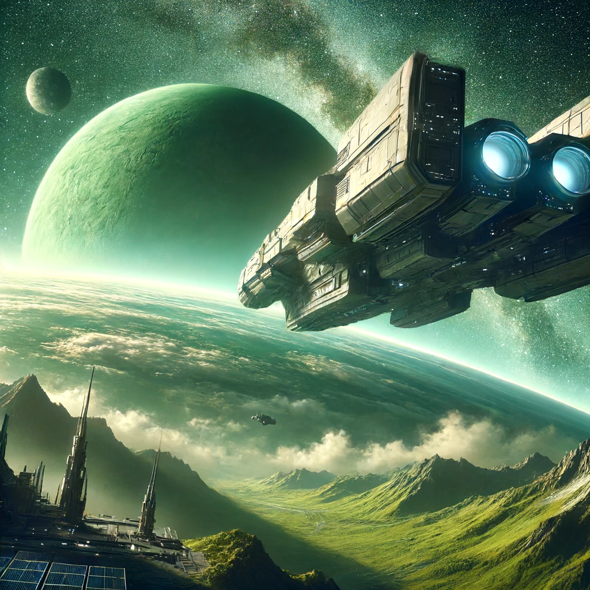

Space Fog Online Story
At the end of the 21st century, a habitable planet was discovered 42 light-years from Earth. After confirming its suitability for life, a colony ship was sent. The expected travel time is 120 years, with most of the crew in a hibernation state.
The spacecraft is equipped with technology to teleport nonorganic objects to the destination, as well as the ability to maintain instant communication and control of robotic avatars.
Resources and robots were teleported to prepare the infrastructure on-site. The main goals of the mission include the creation of a space station suitable for human habitation, the exploration of the planet and surrounding space, and the elimination of any potential threats both in space and on the planet’s surface.
During the exploration, significant resource deposits were discovered in the asteroid belt around the planet, icy fog containing various valuable compounds, and dwarf planetoids rich in useful minerals.
Volunteers from among the colonists are selected for remote control of the robotic avatars, ready to start their mission and take the first steps in the colonization of a new world.
You are one of them.